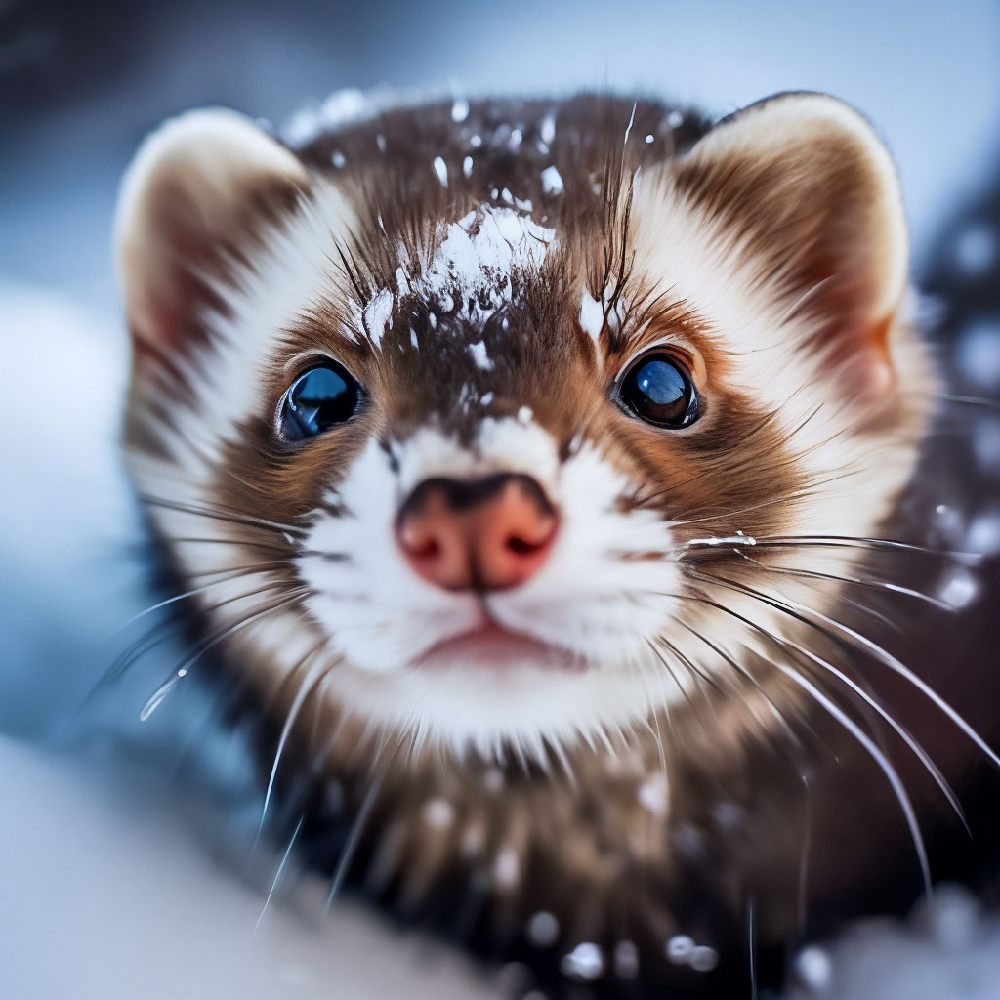

Нейронные арты, или искусство, созданное при участии искусственного интеллекта (ИИ), представляют собой захватывающий перекресток между творчеством и технологией. Этот синтез искусства и ИИ открывает новые горизонты для художников и исследователей, предоставляя им уникальные инструменты и перспективы. Давайте погрузимся в мир нейронных артов, исследовав их историю, технологии и влияние на современное искусство.
Нейронных Артов
Происхождение: Начиная с первых экспериментов в области искусственного интеллекта, исследователи и художники начали применять алгоритмы глубокого обучения для создания уникальных произведений искусства. Одним из первых заметных шагов стала нейросеть DeepDream, разработанная компанией Google.
Эволюция технологий: С течением времени технологии нейронных артов стали более сложными и доступными. Использование генеративных моделей, таких как GAN (генеративно-состязательные сети), позволило создавать более точные и впечатляющие произведения искусства.
Технологии Нейронных Артов
1. Генеративно-состязательные сети (GAN): Одним из ключевых элементов в развитии нейронных артов стали GAN. Эти сети состоят из генератора и дискриминатора, которые соревнуются между собой, создавая уникальные искусственные изображения.
2. Стилизация изображений: Техники стилизации изображений с использованием нейронных сетей позволяют артистам переносить стили известных художников на свои произведения, создавая уникальные комбинации стилей и тем.
3. Трансформация контента: Современные алгоритмы позволяют трансформировать контент из одного вида искусства в другой. Например, превращение фотографий в живопись в стиле Ван Гога или поп-арт.
Влияние на Современное Искусство
 1. Расширение творческих границ: Нейронные арты предоставляют художникам новые возможности для экспериментов и самовыражения, расширяя границы традиционного искусства.
2. Интерактивность с публикой: Искусство, созданное при участии ИИ, становится площадкой для взаимодействия с публикой. Зрители могут влиять на процесс создания произведения или персонализировать его под свои предпочтения.
Нейронные арты не только трансформируют традиционное понимание искусства, но и вносят в него элементы технологии и инноваций. Этот симбиоз творчества и искусственного интеллекта обещает увлекательное будущее, где художники и машины вместе создают произведения, удивляющие и вдохновляющие мир.